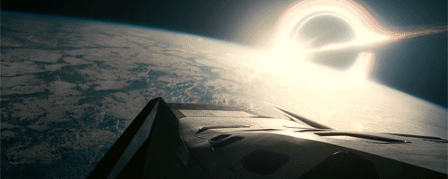

Interestelar (2014), dirigida por Christopher Nolan, es una obra maestra del cine de ciencia ficción que combina una narrativa profunda con efectos visuales impresionantes. Sin embargo, más allá de su trama y de su impacto emocional, existe un aspecto sutil pero poderoso que influye en la percepción del espectador: la paleta de colores. La forma en que Nolan y el director de fotografía Hoyte van Hoytema manipulan los colores en la película no solo refuerza el tono emocional de cada escena, sino que también ayuda a contar la historia de manera visualmente impactante.
 La Tierra: Una Paleta de Nostalgia y Desesperación.
Desde el inicio de la película, Nolan nos sumerge en un mundo en decadencia. La Tierra, asolada por tormentas de polvo y crisis agrícolas, se representa con tonos sepia y marrones desaturados. Estos colores evocan sensaciones de deterioro, nostalgia y desesperanza. La elección de una iluminación cálida y suave, junto con una composición que recuerda las fotografías del Dust Bowl de los años 30, refuerza la sensación de un planeta que está muriendo lentamente.
El contraste entre los tonos cálidos de la Tierra y los fríos del espacio enfatiza el cambio de entorno que experimentan los personajes cuando abandonan el planeta. A nivel emocional, este cambio también refleja la transición de la desesperanza a la posibilidad de redención.
El Espacio: Azul Frío y Soledad.
Tan pronto como Cooper y su equipo abandonan la atmósfera terrestre, la paleta de colores cambia drásticamente. El espacio es representado con tonos oscuros y fríos, predominantemente en azul y negro. La ausencia de colores vibrantes refuerza la inmensidad y la soledad del cosmos. Esta decisión cromática también es un reflejo de la incertidumbre y el aislamiento que sienten los personajes mientras se alejan de su hogar.
El negro del espacio infinito no es solo una representación realista del vacío, sino también un recurso visual que subraya la soledad de los astronautas y el abismo desconocido al que se enfrentan. Los reflejos fríos en los cascos y paneles de la nave refuerzan la sensación de frialdad y distancia emocional.
El Agujero Negro "Gargantua": Belleza y Misterio.
Uno de los elementos visuales más icónicos de Interestelar es Gargantua, el agujero negro. Su representación visual no solo es impactante por su realismo científico, sino también por su uso de colores. El disco de acreción que rodea al agujero negro brilla con tonos dorados y naranjas intensos, contrastando con el negro absoluto del centro. Este contraste refuerza la idea de que Gargantua es tanto un peligro como una oportunidad.
El vórtice de luz y energía que se arremolina a su alrededor crea una sensación de movimiento constante, transmitiendo una sensación de inestabilidad y caos, pero también de asombro y maravilla.

El Tesseract: Un Mar de Luz y Tiempo.
Uno de los momentos más abstractos y visualmente impactantes de la película ocurre cuando Cooper entra en el tesseract, la representación tridimensional de un espacio cuatridimensional. Aquí, los efectos visuales se combinan con una paleta de colores vibrante y caleidoscópica. Los tonos rojizos y anaranjados dominan la escena, evocando una sensación de calidez, protección y destino.
Esta decisión de color contrasta con la frialdad del espacio exterior, sugiriendo que, a pesar de lo incomprensible del entorno, Cooper está más cerca de la conexión emocional con su hija que en cualquier otro momento de la película.
Conclusión: Christopher Nolan y su equipo utilizaron los colores de manera magistral en Interestelar para guiar las emociones del espectador y reforzar la narrativa. Desde los tonos terrosos de la Tierra moribunda hasta los azules fríos del espacio, pasando por la intensidad visual de Gargantua y la calidez del tesseract, cada elección cromática aporta un significado profundo. Así, sin que nos demos cuenta conscientemente, los colores manipulan nuestras emociones, sumergiéndonos aún más en la odisea espacial de Cooper y su equipo. Interestelar no solo es una historia sobre el tiempo, la ciencia y el amor, sino también una obra maestra de la cinematografía visual y cromática. 🌟🚀